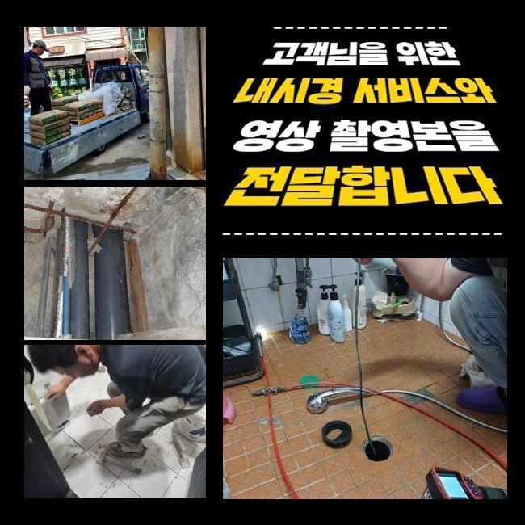
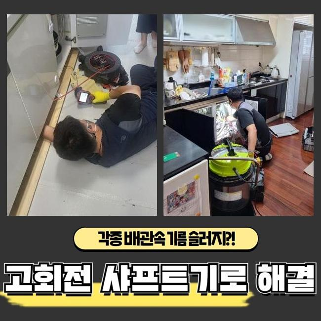
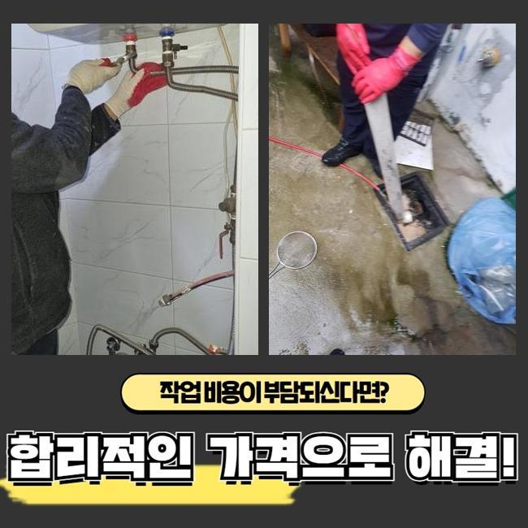
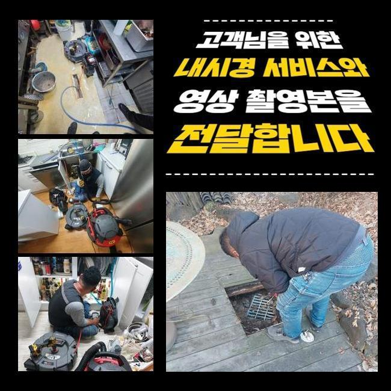
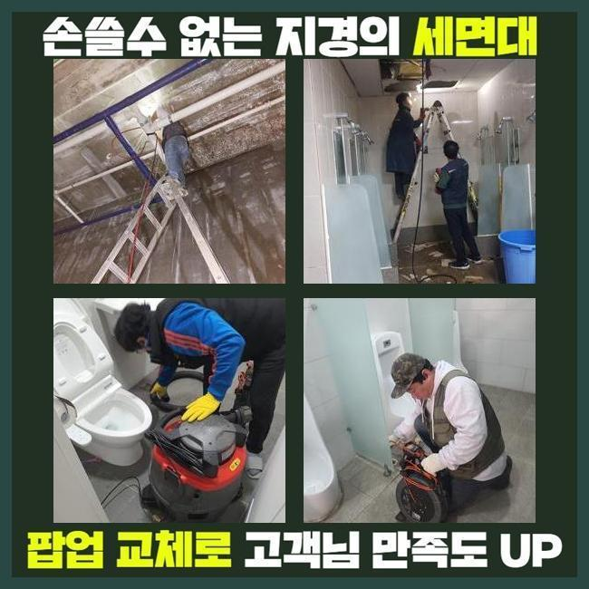
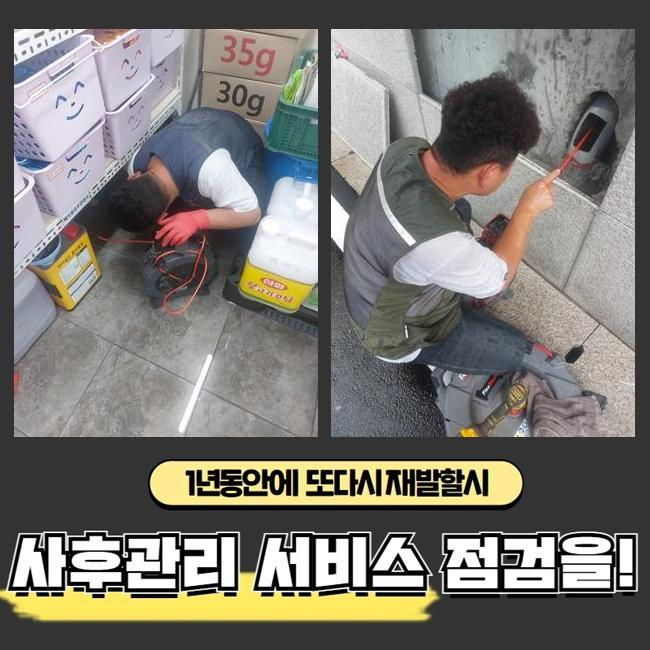
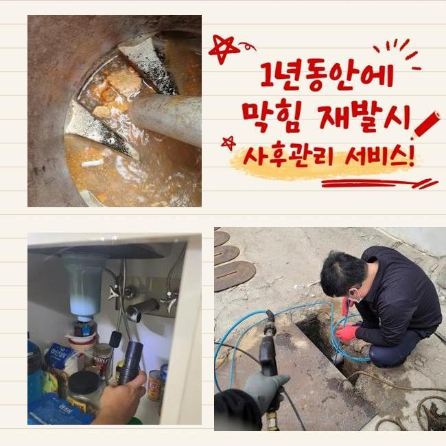

🏠 서대문 영천동세탁실역류 북가좌동 하수구청소장비 누수탐지공사
용인 영천동 싱크대막힘 전문 시공 후기

📋 작업 개요
- 위치: 용인 영천동, 영천동, 용인
- 서비스 유형: 싱크대막힘, 하수구막힘, 배관막힘, 집수정막힘, 누수수리, 역류해결, 뚫는업체, 배관청소, 고압세척, 설비공사
- 작업 일시: 2025. 3. 11. 9:48
- 업체명: 하수구수사대 (010-5615-2118)
🔍 문제 상황
서대문 영천동세탁실역류 북가좌동 하수구청소장비 누수탐지공사
배관이 막히게 되었을때 간단하게 끝나게되면 문제가 없겠지만 방임할경우 2차문제들로 커질수있죠
신속히 대응한다면 좋지만 혹여나 시기가 늦어졌다 하더라도 업체를호출해 문제증상을 해결해보시길 바래요
오늘 내방했던 현장장소는 상가시설인데 막힘문제가 발생하여 의뢰를 주셨는데요
하수구가 막히면 어쩔 수 없는 불편함이 발생되므로 신속하게 방문드립니다
상가시설안 음식점에서 막히게 되었다고 하셨죠
하루지나고 영업이 이루어져야 하므로 조속한 해결이 요구됐죠
원인이뭔지 파악해내려고 서둘렀어요
먼저 식당입구와 부엌내부를 살핀결과 트렌치하수구와 연결되어있는 메인관도 막혀있는 상태였죠
고객님께 상황과 관련하여 설명드린뒤에 작업을 시작하기로 했어요
하수구작업에 들어갈땐 필히 의뢰자에게 과정에대해 설명드려요

🔎 원인 분석
💡 전문가 진단: 정밀 진단 장비를 사용하여 슬러지의 고착 여부를 판명하고 타격/세척 작업을 실시했습니다.
샤프트장비를 배관속에 투입해 안속에있는 이물질들을 꺼내줍니다
식당이었기에 기름이물이 상당량으로 쌓인 상태였습니다
강도를 조절하며 안쪽에 쌓이게된 찌꺼기들을 없애주었죠
작업중간에 정상적으로 제거과정이 이루어지는지 하수구카메라로 파악하면서 진행해주었어요
역류중이던 하수구였으므로 가능한 서둘러서 크랙이 발생하지않게 작업했는데 다행인것은 2차적인 문제없이 역류를처리해 안심했죠
바깥쪽을 작업해준뒤 건물안으로 자리를옮겼죠
부엌에 위치하는 싱크대배관이 막히게되어 배관카메라로 우선 검수를 진행해주었네요
검사를해보니 기름기가 석회물로 변형되어 막히게된것으로 판단되었습니다
석회물을 없애기위해 분쇄장비로 부수어주었죠
분쇄한후에는 분쇄된 찌꺼기들을 흡입기로 빨아들여주는 작업으로 이물제거를 완료했죠
이러한 문제가 발생되는것은 여러원인을 통하여 발생되지만 가장 큰 이유로는 하수구속에 잔해물질이 쌓이면서 막히는거에요

🔧 작업 과정
그렇기때문에 음식물이나 기름기가 들어가지않도록 주의하시는게 좋으며 주기로 배관을 점검하여 문제에 대하여 살펴봐야 한답니다
오랜시간 작업하여 트렌치관 내부에 쌓여있었던 기름때와 잔해물질들을 해결할수있었죠
집수정도 함께 막혀있는걸 알아냈죠 이물이 전체적으로 모이는 시설이어서 샤프트기나 석션기로는 뚫어내기 어렵기에 고압수로 청소해주는 전문장비가 필요했죠
청소과정에 대하여 고객님에게 양해를구한뒤 고압세척을 진행해야하는 필요성에 대하여 상세하게 일러드렸어요
고압세척은 강한압력이 사용되기에 작업자는 주의해서 작업하는것이 필요하겠습니다
자칫하면 하수관벽에 크랙이 발생하여 배관을 교체하는 경우로까지 연결될 가능성이 있어요
집수정안에 기름들이 가득차있어 높은 압력의 물을쏴서 많은 이물질들을 밀어내준후 제거했죠
집수정과 트렌치까지 전부 작업해보니 물빠짐이 원활하게 이루어지는것을 살펴볼수가 있었습니다
식당이나 매장같은 영업현장은 금전적인 피해를 입으시기 때문에 항시 조속하게 출동해드려요
배수구망과 배관트랩을 설치하여 막힘문제와 악취현상을 방지해볼수 있겠습니다
확실하게 처리하는 해결방법은 막힘증세가 보일때 즉각적으로 전문가와 함께 맡기시는것이죠
여러번 말했지만 방치를 하신다면 물이넘치거나 누수되는 현상들로 이어진답니다
막힌배관을 뚫어보려고 자가조치를 여러번 해보셨을거라 생각해요 간단히 시도할수있는 방식을 공개해볼게요
뜨거운물과 배관클리너 제품을 적절히 이용하여 하수구에 부어부시고 그렇게 해서도 뚫리지않으면 전문가를 호출해 도움을 받으시는게 좋습니다
무리하게 흘려보낸다면 배관크랙이 일어날 확률도 있어 권장량으로 시도바랍니다
어떠한 곳이라도 배수관이 막히게된다면 당혹스러울 겁니다
저희들의 경우에는 가정집과 음식점 다세대건물등 어떠한 장소든 출동할수 있죠


✅ 작업 완료
작업착수시 투명하게 작업과정을 진행해주어야 맡겨볼수 있겠죠
작업견적에 대해 먼저 파악하여 비용과 관련하여 자세하게 전달드립니다
씽크대나 욕실배관은 간단히 석션기로만 처리가된다면 오만원으로 책정이되고 있으니 참고해주세요!
이밖에도 해소되지 않으신게 있으시면 시간구애없이 연락주신다면 세세한 상담을 통하여 돕도록 할게요!
막힘증상 발생했다면 조속한 대처로 손해를 줄이시길 바래요




⚠️ 베란다 누수 및 방수 관리 방법
- ✅ 비가 많이 올 때 창틀 주변이나 아래층 천장에 얼룩이 생기는지 정기적으로 확인해 보세요.
- ✅ 우수관 주변 실리콘 마감이 들뜨거나 깨진 틈새가 있는지 손상 여부를 수시로 체크하세요.
- ✅ 베란다 바닥 타일의 줄눈(메지)이 소실되면 그 틈으로 물이 침투하여 누수가 유발됩니다.
- ✅ 누수 의심 증상 발견 시 방치하면 아래층 손실이 커지므로 즉시 전문가의 진단을 받으십시오.
💡 핵심 정리
- 확실한 장비 작업(내시경 점검 및 샤프트 스케일링)으로 원인을 뿌리 뽑습니다.
- 작업 후 1년 이내에 동일한 부위 재발 시 100% 무상 A/S 서비스를 보장합니다.
- 서울 · 경기 · 인천 전 지역에 24시간 언제든 긴급 출동할 수 있도록 항시 대기 중입니다.
❓ 자주 묻는 질문 (FAQ)
🚨 용인 영천동 싱크대막힘 문제로 고민이신가요?
정확한 원인 진단과 확실한 시공으로 재발 없는 해결을 약속드립니다.
24시간 긴급 출동 | 서울 · 경기 · 인천 전지역 | 1년 내 재발 시 무상 A/S